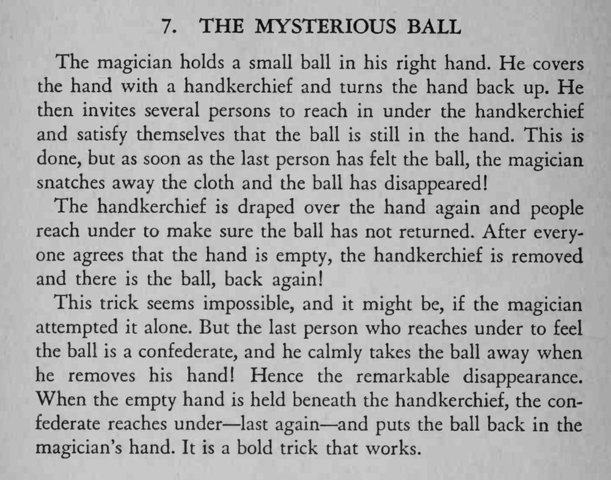

小球在手帕下被好几位观众逐一摸过确认，掀开手帕却不见了；再盖上手帕摸一遍，球又回来了。
托儿的动作要自然，收手和放球时都不能停顿犹豫。

The magician holds a small ball in his right hand. He covers the hand with a handkerchief and turns the hand back up. He then invites several persons to reach in under the handkerchief and satisfy themselves that the ball is still in the hand. This is done, but as soon as the last person has felt the ball, the magician snatches away the cloth and the ball has disappeared! The handkerchief is draped over the hand again and people reach under to make sure the ball has not returned. After everyone agrees that the hand is empty, die handkerchief is removed and there is the ball, back again! This trick seems impossible, and it might be, if the magician attempted it alone. But the last person who reaches under to feel the ball is a confederate, and he calmly takes the ball away when he removes his hand! Hence the remarkable disappearance. When the empty hand is held beneath the handkerchief, the confederate reaches under last again and puts the ball back in the magician's hand. It is a bold trick that works.